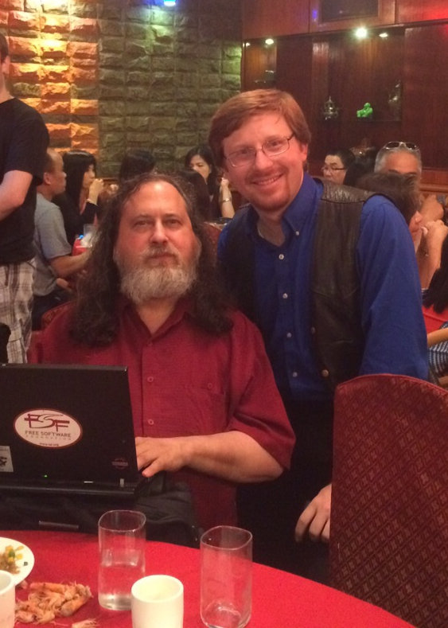

Free Software
It's not about the license
Presented by Larry Garfield (@Crell)
A modest proposal
If your business model requires doing something unethical, you don't have a business model.
Ancient history
(The 70s...)
Richard Stallman
New York, 2015
<aside />

By Sam Williams - Taken from the cover of the O'Reilly book Free as in Freedom: Richard Stallman's Crusade for Free Software, CC BY-SA 3.0, Link
This meant that the first step in using a computer was to promise not to help your neighbor.—Free Software, Free Society, page 18
Computer users should be free to modify programs to fit their needs, and free to share software, because helping other people is the basis of society.—Free Software, Free Society, page 18
Richard Stallman
- Started GNU Project
- Free Software Foundation, 1985
But what license?

Their goal was not freedom, just “success,” defined as “having many users.” They did not care whether these users had freedom, only that they should be numerous.—Free Software, Free Society, page 22
Free Software Definition
- The freedom to run the program as you wish, for any purpose.
- The freedom to study how the program works, and change it so it does your computing as you wish.
- The freedom to redistribute copies so you can help your neighbor.
- The freedom to distribute copies of your modified versions to others.
Use, Learn, Improve, Share
General Public License
- You have all four freedoms...
- .. on condition that you extend the same to your users
1991

GNU/Linux
Goodbye, "free software";
hello, "open source"

- Triggered by Netscape releasing engine, 1997
- Rebrand
- "Free" scares businesses
- "the term makes a lot of corporate types nervous" —Eric Raymond
For instance, Wired magazine said that Robert McMillan, editor of Linux Magazine, “feels that the move toward open source software should be fueled by technical, rather than political, decisions.”
Caldera’s CEO openly urged users to drop the goal of freedom and work instead for the “popularity of Linux.”—Free Software, Free Society, page 54 (published 2000)
As one person put it, “Open source is a development methodology; free software is a social movement.” For the Open Source movement, non-free software is a suboptimal solution. For the Free Software movement, non-free software is a social problem and free software is the solution.—Free Software, Free Society, page 57
Linus' Law
Given enough eyeballs, all bugs are shallow
Only true for malicious code
Proprietary software has no security at all in one crucial case—against its developer. And the developer may help others attack. Microsoft shows Windows bugs to the NSA (the US government digital spying agency) before fixing them.—"Free Software, Free Society", Page 31
Source: Sean Gallagher, "NSA Gets Early Access to Zero-Day Data from Microsoft, Others," 14 June 2013
Free Software is about
protecting users from developers.
From us.
If the users don’t control the program, the program controls the users.
—Richard Stallman, "Free Software, Free Society", Page 30
1st Moral Principle of the web
When a computer receives conflicting instructions from its owner and from a remote party, the owner always wins.
—Cory Doctorow, Former EFF Director
Free Software is Civil Rights
applied to software.
Sources:
- Machine Politics in the Digital Age (NYTimes)
- Ohio's Odd Numbers (Vanity Fair)
- The Mysterious Case of Ohio's Voting Machines (Wired)
At the end of the day, I bought this equipment, and I want everything I need to keep it running without relying on the manufacturer or dealer.—Rancher Jeff Buckingham
COMPAS, from Northpointe/Equivant
Our choice is not between "regulation" and "no regulation." The code regulates. It implements values, or not. It enables freedoms, or disables them. It protects privacy, or promotes monitoring. People choose how the code does these things.—Larry Lessig, Code is Law, 2000
People write the code.
The ASP loophole
(Application Service Provider, not Active Server Pages)
If I only let people use it over a network, they never get a copy of the code so they don't have Free rights to the source!
Affero GPL
What right do you have to your own data?
What right do your users have to their own data?
We can build... cyberspace to protect values that we believe are fundamental. Or we can build... cyberspace to allow those values to disappear. There is no middle ground. There is no choice that does not include some kind of building. Code is never found; it is only ever made, and only ever made by us.—Lawrence Lessig, Code 2.0
Software is a moral act
I reserve the right to use this code to control you against your will.
I will not use this code to control you, but you can use it to control someone else.
I will not use this code to control you, and you may not use it to control others.
What moral statement
will you make?
Further reading
Free Software, Free Society 3rd Ed,
Richard Stallman
Free Culture,
Lawrence Lessig